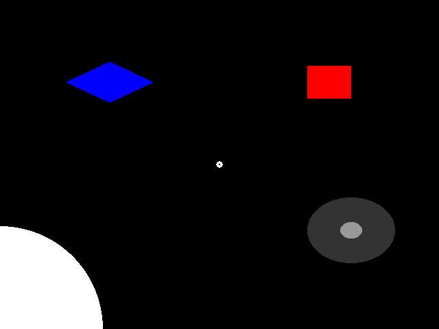

Note
Click here to download the full example code
This example demonstrates the different mouse click functionality in the ExperimentController class.
Out:
exp_name: MouseDemo
date: 2019-01-30 22_35_20.361855
file: /home/circleci/project/examples/experiments/mouse.py
participant: foo
session: 001
2019-01-30 22:35:20,362 - INFO - Expyfun: Using version 2.0.0.dev0 (requested dev)
2019-01-30 22:35:20,362 - INFO - Expyfun: Setting up Pyglet audio
2019-01-30 22:35:20,407 - INFO - Expyfun: Setting up screen
2019-01-30 22:35:20,419 - EXP - Expyfun: Set screen visibility True
2019-01-30 22:35:20,475 - INFO - Expyfun: Initializing dummy triggering mode
2019-01-30 22:35:20,478 - INFO - Expyfun: Initialization complete
2019-01-30 22:35:20,478 - EXP - Expyfun: Participant: foo
2019-01-30 22:35:20,478 - EXP - Expyfun: Session: 001
2019-01-30 22:35:22,396 - INFO - Expyfun: Exiting
2019-01-30 22:35:22,398 - EXP - Expyfun: Audio stopped and reset.
# Author: Ross Maddox <rkmaddox@uw.edu>
#
# License: BSD (3-clause)
from expyfun import ExperimentController, building_doc
import expyfun.analyze as ea
from expyfun.visual import (Circle, Rectangle, Diamond, ConcentricCircles,
FixationDot)
print(__doc__)
wait_dur = 3.0 if not building_doc else 0.
msg_dur = 1.5 if not building_doc else 0.
max_wait = float('inf') if not building_doc else 0.
with ExperimentController('MouseDemo', screen_num=0,
window_size=[640, 480], full_screen=False,
stim_db=0, noise_db=0, output_dir=None,
participant='foo', session='001',
version='dev') as ec:
###############
# toggle_cursor
ec.toggle_cursor(True)
ec.screen_prompt('Now you see it.', max_wait=msg_dur, wrap=False)
ec.toggle_cursor(False)
ec.screen_prompt("Now you don't (maybe--Windows is buggy)",
max_wait=msg_dur, wrap=False)
ec.toggle_cursor(True)
################
# wait_one_click
ec.screen_text('Press any mouse button.', wrap=False)
ec.flip()
ec.wait_one_click(max_wait=max_wait)
ec.toggle_cursor(False)
ec.screen_text('Press the left button.', wrap=False)
ec.flip()
ec.wait_one_click(live_buttons=['left'], visible=True, max_wait=max_wait)
ec.wait_secs(0.5)
ec.toggle_cursor(True)
###########################
# listen_clicks, get_clicks
ec.screen_text('Press a few buttons in a row.', wrap=False)
ec.flip()
ec.listen_clicks()
ec.wait_secs(wait_dur)
clicks = ec.get_clicks()
ec.screen_prompt('Your clicks:\n%s' % str(clicks), max_wait=msg_dur)
###########################
# get_mouse_position
ec.screen_prompt('Move the mouse around...', max_wait=msg_dur, wrap=False)
stop_time = ec.current_time + wait_dur
while ec.current_time < stop_time:
ec.screen_text('%i, %i' % tuple([p for p in
ec.get_mouse_position()]),
wrap=False)
ec.check_force_quit()
ec.flip()
###########################
# wait_for_click_on
ec.toggle_cursor(False)
ec.wait_secs(1)
c = Circle(ec, 150, units='pix')
r = Rectangle(ec, (0.5, 0.5, 0.2, 0.2), units='norm', fill_color='r')
cc = ConcentricCircles(ec, pos=[0.6, -0.4],
colors=[[0.2, 0.2, 0.2], [0.6, 0.6, 0.6]])
d = Diamond(ec, (-0.5, 0.5, 0.4, 0.25), fill_color='b')
dot = FixationDot(ec)
objects = [c, r, cc, d, dot]
ec.screen_prompt('Click on some objects...', max_wait=msg_dur, wrap=False)
for ti in range(3):
for o in objects:
o.draw()
screenshot = ec.screenshot()
ec.flip()
click, ind = ec.wait_for_click_on(objects, max_wait=max_wait)
if ind is not None:
objects[ind].draw()
ec.flip()
ec.wait_secs(0.2)
ea.plot_screen(screenshot)
Total running time of the script: ( 0 minutes 2.155 seconds)